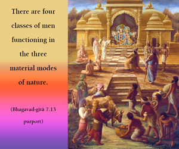

Deluded by the three modes [goodness, passion and ignorance], the whole world does not know Me, who am above the modes and inexhaustible.



The whole world is enchanted by the three modes of material nature. Those who are bewildered by these three modes cannot understand that transcendental to this material nature is the Supreme Lord, Kṛṣṇa.
Every living entity under the influence of material nature has a particular type of body and a particular type of psychological and biological activities accordingly. There are four classes of men functioning in the three material modes of nature. Those who are purely in the mode of goodness are called brāhmaṇas. Those who are purely in the mode of passion are called kṣatriyas. Those who are in the modes of both passion and ignorance are called vaiśyas. Those who are completely in ignorance are called śūdras. And those who are less than that are animals or animal life. However, these designations are not permanent. I may be either a brāhmaṇa, kṣatriya, vaiśya or whatever – in any case, this life is temporary. But although life is temporary and we do not know what we are going to be in the next life, by the spell of this illusory energy we consider ourselves in terms of this bodily conception of life, and we thus think that we are American, Indian, Russian, or brāhmaṇa, Hindu, Muslim, etc. And if we become entangled with the modes of material nature, then we forget the Supreme Personality of Godhead, who is behind all these modes. So Lord Kṛṣṇa says that living entities deluded by these three modes of nature do not understand that behind the material background is the Supreme Personality of Godhead.
There are many different kinds of living entities – human beings, demigods, animals, etc. – and each and every one of them is under the influence of material nature, and all of them have forgotten the transcendent Personality of Godhead. Those who are in the modes of passion and ignorance, and even those who are in the mode of goodness, cannot go beyond the impersonal Brahman conception of the Absolute Truth. They are bewildered before the Supreme Lord in His personal feature, which possesses all beauty, opulence, knowledge, strength, fame and renunciation. When even those who are in goodness cannot understand, what hope is there for those in passion and ignorance? Kṛṣṇa consciousness is transcendental to all these three modes of material nature, and those who are truly established in Kṛṣṇa consciousness are actually liberated.